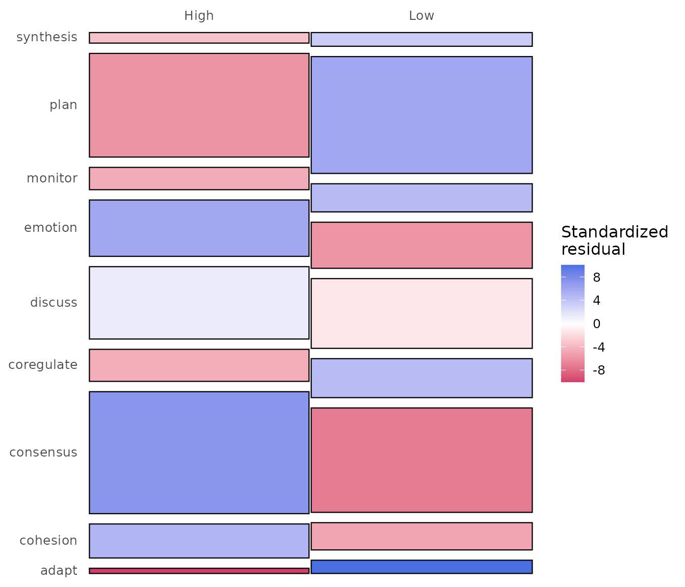
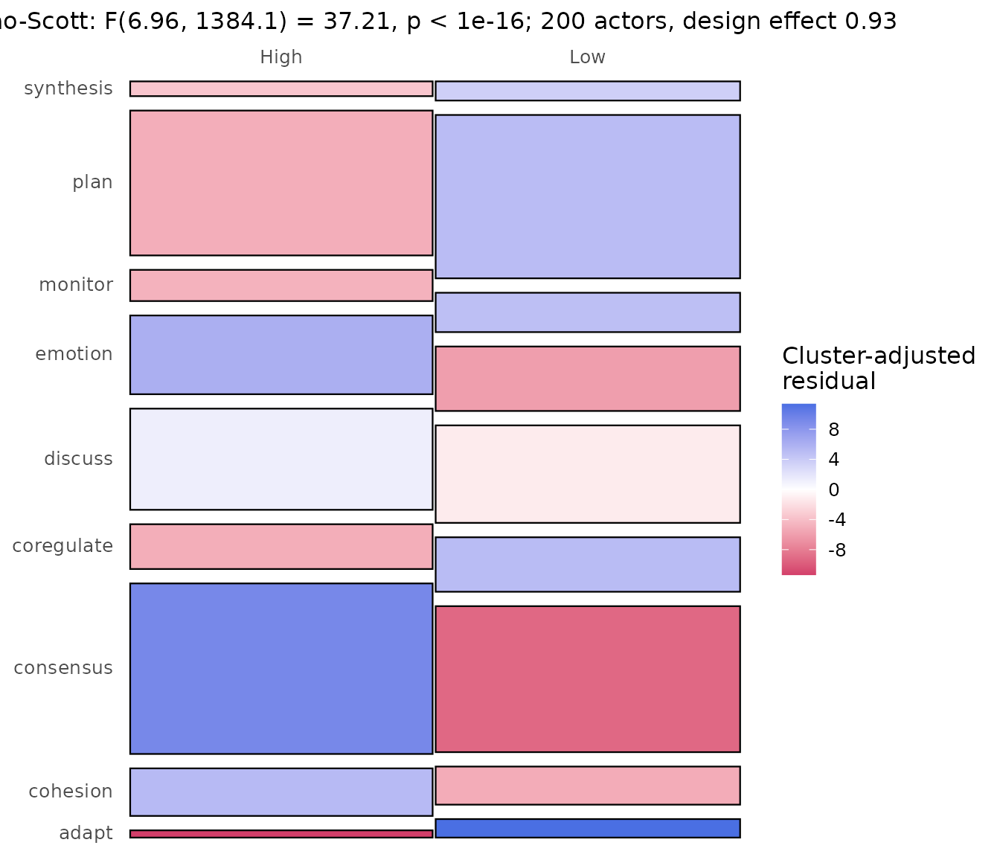
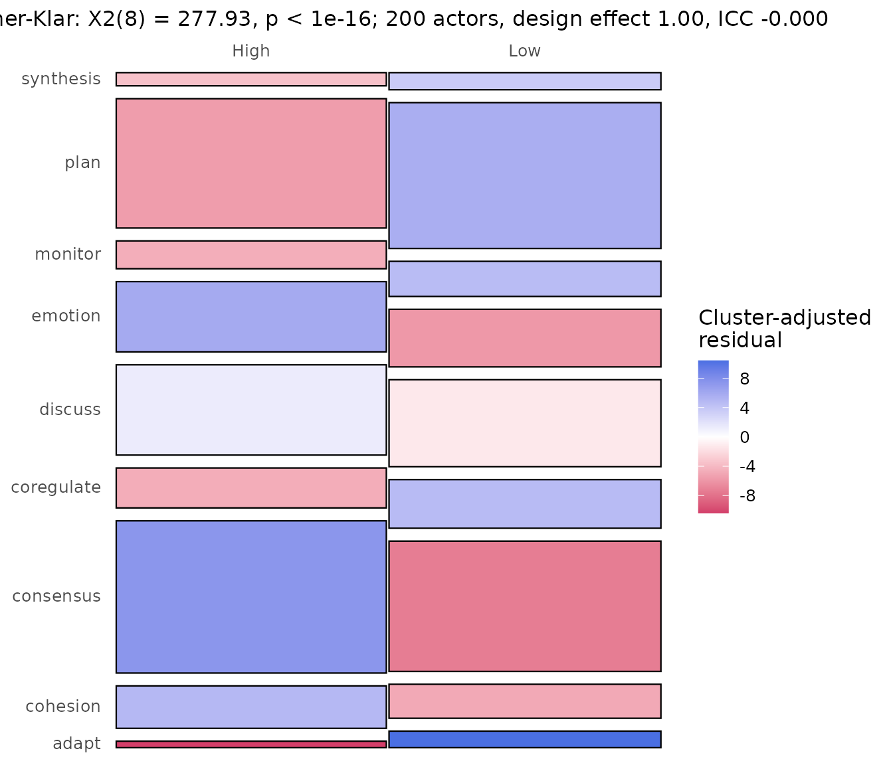
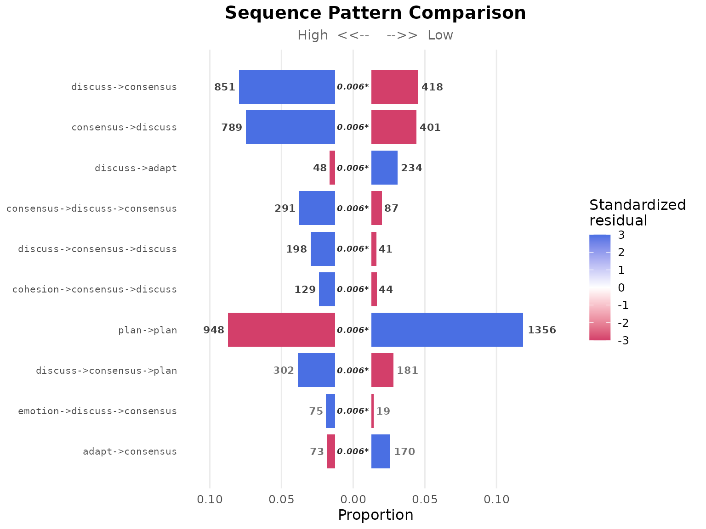

Nested sequences and the permutation test
Mohammed Saqr
University of Eastern FinlandSonsoles López-Pernas
University of Eastern FinlandKamila Misiejuk
FernUniversität in Hagen, GermanySource:
vignettes/articles/permutation-nested-data.Rmd
permutation-nested-data.RmdDo high and low achievers regulate their group work differently, or
do their teams? In group_regulation_long, a synthetic
dataset generated from the group_regulation data of the tna
package (Tikka, López-Pernas & Saqr 2025), 2,000 students work in
200 teams of 10, and the achievement level is given to the team, not to
the student. A comparison of High and Low is therefore a comparison of
teams. The students are nested in teams. The permutation test treats
each student’s sequence as an independent unit, so a nesting effect,
teammates behaving alike, would enter the comparison. The arguments for
nested data in Nestimate (Saqr, López-Pernas & Misiejuk 2026) are
actor in permutation(),
sequence_compare() and bootstrap_network(),
and nested with actor in
mosaic_plot(), mosaic_analysis() and
mosaic_test(). Their defaults treat every sequence as an
independent unit.
achievers <- build_network(group_regulation_long, method = "relative",
actor = "Actor", action = "Action",
time = "Time", group = "Achiever")
achievers## Group Networks (2 groups, group_col: Achiever)
##
## Group Nodes Edges Weights
## High 9 76 [0.001, 0.576]
## Low 9 75 [0.000, 0.462]build_network() builds one transition network per
achievement level from the students’ action sequences. Both networks
have the same nine regulation actions and 75 to 76 non-zero
transitions.
The ordinary test
permutation(achievers, iter = 1000, seed = 1)## Grouped Permutation Test
## Groups: High vs Low
##
## -- High vs Low --
## Permutation Test: Transition Network (relative probabilities) [directed]
## Iterations: 1000 | Alpha: 0.05
## Nodes: 9 | Edges tested: 78 | Significant: 42
## Global test (networks differ overall?): M = 2.612 (p = 0.000999) | S = 0.210 (p = 0.000999)permutation() pools the 2,000 sequences, reassigns them
to High and Low 1,000 times, and compares the observed differences with
the reassigned ones, as in the permutation test of transition network
analysis (Saqr et al. 2025). Two kinds of result are reported. The edge
tests ask, for each transition, whether the High minus Low difference is
larger than the reassignments produce: 42 of 78 transitions are. The
global test asks whether the two networks differ at all, with two
statistics: M, the sum of all absolute edge differences, and S, the
largest one. (These letters follow permutation()’s
convention; in the Network Comparison Test and in nct(), M
is the largest edge difference and S the difference in global strength.)
Both have p = 0.000999, the smallest value 1,000 reassignments can give:
no reassignment produced a difference as large as the observed one.
The test assumes that any student could have been in either group. In this design only whole teams could, so the next step accounts for the nesting.
Reassigning whole teams
permutation(achievers, iter = 1000, seed = 1, actor = "Group")## Grouped Permutation Test
## Groups: High vs Low
##
## -- High vs Low --
## Permutation Test: Transition Network (relative probabilities) [directed]
## Iterations: 1000 | Alpha: 0.05 | Actor: Group (200 actors)
## Nodes: 9 | Edges tested: 78 | Significant: 42
## Global test (networks differ overall?): M = 2.612 (p = 0.000999) | S = 0.210 (p = 0.000999)
## Nesting in Group: ICC = -0.002 [95% CI -0.006, 0.002] | between design
## Design effect (1 = nesting does not matter): edges 1.03 | global 1.20actor = "Group" tells the test that the sequences are
nested in teams. Each reassignment now moves all ten students of a team
together, which is how the achievement levels were actually given. The
observed differences are the same; only the reference distribution
changes.
The edge tests and the global test give the same result as with student-level reassignment: 42 significant transitions, p = 0.000999 for M and S. The output also reports the intraclass correlation, ICC = −0.002 (95% CI −0.006 to 0.002), and the design effect, 1.03 for the transitions and 1.20 for M. Both are defined and interpreted in the next section.
A low ICC means that sequences from the same team are about as different from each other as sequences from different teams: the observations are close to independent, and an analysis that ignores the nesting gives nearly the same results as one that accounts for it. Accounting for nesting becomes necessary when the ICC is not negligible, and more so when units are large, because the design effect grows with both: Kish’s (1965) approximation is 1 + (m − 1) × ICC for units of size m. A commonly cited rule of thumb (Muthén & Satorra 1995) is that design effects below 2 do not lead to seriously misleading inferences. Here the ICC is −0.002 and the design effect 1.03, so accounting for the nesting was not necessary, and the results with and without it were almost the same.
The nesting diagnostics
The intraclass correlation (ICC) is the proportion of the total variance that lies between units rather than within them:
An ICC of 0 means that members of the same unit are no more alike
than members of different units; an ICC of 1 means that all members of a
unit are identical and all variation lies between units. A value in
between is the proportion of variation due to the unit. In
permutation() the ICC is computed for each transition: for
every student, the share of their transitions that is, for example,
plan to monitor; the one-way ANOVA ICC of that
share across teams is computed within High and within Low. The
transition ICCs are averaged with weights equal to transition frequency.
The 95% interval comes from the jackknife, leaving out one team at a
time.
The design effect is the ratio of the variance of an estimate under the nested design to its variance had the units been sampled independently. Here it is the variance of the reassigned differences when whole teams move, divided by the variance when single students move. A value of 1 means both reassignments give the same chance variation.
permutation_diagnostics() runs the ordinary and the
team-level test on the same data and reports both with these two
quantities, one row per compared pair:
permutation_diagnostics(achievers, actor = "Group", iter = 1000, seed = 1)## pair n_sequences n_actors design icc icc_ci_lower
## 1 High vs Low 2000 200 between -0.001697397 -0.005641197
## icc_ci_upper deff_edges deff_global p_global_sequence p_global_actor
## 1 0.002246402 1.026921 1.200797 0.000999001 0.000999001
## sig_edges_sequence sig_edges_actor edges_changed min_p_actor
## 1 42 42 2 0.000999001The comparison involves 2,000 sequences in 200 teams. The design is
between: every team belongs to one achievement level
(within would mean units in both groups, as in repeated
measures; mixed, some of each). The ICC is −0.002 with a
95% interval from −0.006 to 0.002, which indicates little evidence of a
nesting effect; a value slightly below zero is sampling variation around
zero. The design effect is 1.03 for the transitions (median over edges)
and 1.20 for the global statistic M. The global test has p = 0.000999
under both reassignments, and 42 transitions are significant under both.
Two transitions change their conclusion. The smallest p-value the
team-level test can produce, min_p_actor, is 0.000999: with
200 teams the number of iterations sets the limit, not the number of
teams.
With level = "edges" the same comparison is reported per
transition:
head(permutation_diagnostics(achievers, actor = "Group", iter = 1000,
level = "edges", seed = 1), 6)## pair from to diff icc null_sd_sequence
## 1 High vs Low adapt cohesion -0.014762566 0.010118088 0.03863244
## 2 High vs Low adapt consensus 0.055773975 -0.003796296 0.04560409
## 3 High vs Low adapt coregulate -0.029891304 0.002498496 0.01294589
## 4 High vs Low adapt discuss -0.032473790 -0.009052931 0.02104505
## 5 High vs Low adapt emotion 0.030430928 -0.007376103 0.02877059
## 6 High vs Low adapt monitor -0.006957293 -0.003562251 0.01591287
## null_sd_actor deff p_sequence p_actor changed
## 1 0.04129895 1.1428088 0.68831169 0.72927073 FALSE
## 2 0.04255012 0.8705504 0.21378621 0.18981019 FALSE
## 3 0.01383698 1.1424014 0.01498501 0.02397602 FALSE
## 4 0.01902641 0.8173606 0.11588412 0.09190809 FALSE
## 5 0.02727781 0.8989211 0.32267732 0.26373626 FALSE
## 6 0.01553230 0.9527393 0.66633367 0.66733267 FALSEdiff is the High minus Low transition probability and is
the same under both tests. icc is the ICC of that
transition. null_sd_sequence and null_sd_actor
are the spread of the reassigned differences under student-level and
team-level reassignment, and deff is the squared ratio of
the two. p_sequence and p_actor are the two
edge p-values, and changed marks a transition that is
significant at 0.05 under one test but not the other. In the six rows
shown, the ICCs lie between −0.009 and 0.010 and the design effects
between 0.82 and 1.14; the two spreads are close, so the two p-values
are close. adapt to coregulate has p = 0.015
and p = 0.024 and is significant under both.
Over all 78 transitions, two change at this seed
(coregulate to adapt, emotion to
plan), with p-values between 0.047 and 0.072 under both
tests. With seeds 2 to 4 a different set of two or three transitions
changes, all with p-values between 0.038 and 0.068. These changes come
from the finite number of reassignments, not from the nesting. The ICC
indicates little evidence of a nesting effect, and the High–Low
difference does not depend on the nesting of students in teams.
Mosaic plots of nested counts
mosaic_plot() computes the residuals of a
group-by-action table. With nested = TRUE the counts are
taken team by team (actor = "Group"), and the residuals
allow for the dependence of actions within a team.
nested_method selects the method: "rao_scott"
(default), the chi-square corrected for the design effect of the cluster
sample (Rao & Scott, 1984); "donner_klar", the
chi-square adjusted by the intracluster correlation (Donner & Klar,
1994); "cmh", the Cochran-Mantel-Haenszel test stratified
by team (Landis, Heyman, & Koch, 1978); "gee", a
generalized estimating equation with a cluster-robust covariance (Liang
& Zeger, 1986); and "glmm", a generalized linear mixed
model with a random effect per team (Breslow & Clayton, 1993).
report = TRUE prints the overall test and adds it to the
plot as a subtitle.
mosaic_plot(achievers, seed = 1, left_angle = 0)
mosaic_plot(achievers, nested = TRUE, actor = "Group", report = TRUE,
left_angle = 0)## method test statistic df df2 p_value n clusters
## rao_scott Rao-Scott 37.21183 6.955041 1384.053 1.065954e-47 27533 200
## design_effect icc
## 0.9335922 NA
mosaic_plot(achievers, nested = TRUE, nested_method = "donner_klar",
actor = "Group", report = TRUE, left_angle = 0)## method test statistic df df2 p_value n clusters
## donner_klar Donner-Klar 277.9254 8 NA 2.038053e-55 27533 200
## design_effect icc
## 1 -0.0002752021
The subtitle and the printed row give the test statistic, its degrees of freedom, the p-value, the number of teams, and the design effect or the intracluster correlation where the method estimates one.
The three plots show the same pattern. Low achievers use
adapt more often than expected under independence (residual
11.3 with the Rao-Scott method) and High achievers
consensus (9.2) and cohesion (5.2). The
Rao-Scott design effect is 0.93 and the Donner-Klar intracluster
correlation −0.0003, so counting team by team leaves the residuals and
the test close to those of the pooled counts.
Tests of association for nested counts
mosaic_test(achievers, actor = "Group")## method test statistic df df2 p_value
## 1 chisq Pearson 277.92541 8.000000 NA 2.038053e-55
## 2 rao_scott Rao-Scott 37.21183 6.955041 1384.053 1.065954e-47
## 3 donner_klar Donner-Klar 277.92541 8.000000 NA 2.038053e-55
## 4 cmh Cochran-Mantel-Haenszel NA NA NA NA
## 5 gee GEE Wald 358.60471 8.000000 NA 1.317864e-72
## 6 glmm GLMM Wald 269.91201 8.000000 NA 1.026755e-53
## n clusters design_effect icc
## 1 27533 NA NA NA
## 2 27533 200 0.9335922 NA
## 3 27533 200 1.0000000 -0.0002752021
## 4 27533 NA NA NA
## 5 27533 200 NA NA
## 6 27533 200 NA NA
## note
## 1 <NA>
## 2 <NA>
## 3 <NA>
## 4 Cochran-Mantel-Haenszel stratifies by cluster, so both variables must vary within clusters
## 5 Wald test with a cluster-robust covariance; liberal unless the actors are many relative to the degrees of freedom (see ?mosaic_analysis)
## 6 <NA>mosaic_test() returns one row per test: Pearson’s
chi-square on the pooled counts and the five tests for nested counts. A
test that the design does not admit returns NA with the
reason in note. The Cochran-Mantel-Haenszel test stratifies
by team, and the achievement level is constant within each team, so it
cannot be computed here and returns NA. method
selects tests, and level = "cells" returns the residual of
every cell.
Every test that can be computed rejects independence: Pearson’s chi-square is 277.9 (8 df, p < ), the Rao-Scott F is 37.2 (6.96 and 1,384 df, p < ), the GEE Wald statistic 358.6 and the GLMM Wald statistic 269.9 (8 df each). The note to the GEE test states that its cluster-robust covariance is liberal unless the teams are many relative to the degrees of freedom; here there are 200 teams for 8 degrees of freedom.
head(mosaic_test(achievers, method = "rao_scott", actor = "Group",
level = "cells"))## method group state observed residual
## 1 rao_scott High adapt 155 -11.349878
## 2 rao_scott Low adapt 399 11.349878
## 3 rao_scott High cohesion 1018 5.193551
## 4 rao_scott Low cohesion 821 -5.193551
## 5 rao_scott High consensus 3651 9.233770
## 6 rao_scott Low consensus 3146 -9.233770Sequence patterns
set.seed(1)
sequence_compare(achievers, sub = 2:3, iter = 1000, actor = "Group")## Sequence Comparison [322 patterns | 2 groups: High, Low]
## Lengths: 2, 3 | min_freq: 5 | permutation: 1000 iter (fdr), actor: Group (200 actors, between)
##
## pattern group count prop resid effect p
## discuss->consensus High 851 0.07 12.60 14.71 0.00564
## discuss->consensus Low 418 0.03 -12.60 14.71 0.00564
## consensus->discuss High 789 0.06 11.65 14.27 0.00564
## consensus->discuss Low 401 0.03 -11.65 14.27 0.00564
## discuss->adapt High 48 0.00 -11.08 12.94 0.00564
## discuss->adapt Low 234 0.02 11.08 12.94 0.00564
## consensus->discuss->consensus High 291 0.02 10.65 12.61 0.00564
## consensus->discuss->consensus Low 87 0.01 -10.65 12.61 0.00564
## discuss->consensus->discuss High 198 0.02 10.27 12.08 0.00564
## discuss->consensus->discuss Low 41 0.00 -10.27 12.08 0.00564
## cohesion->consensus->discuss High 129 0.01 6.54 9.27 0.00564
## cohesion->consensus->discuss Low 44 0.00 -6.54 9.27 0.00564
## plan->plan High 948 0.07 -8.73 9.01 0.00564
## plan->plan Low 1356 0.11 8.73 9.01 0.00564
## discuss->consensus->plan High 302 0.03 5.65 8.35 0.00564
## discuss->consensus->plan Low 181 0.02 -5.65 8.35 0.00564
## emotion->discuss->consensus High 75 0.01 5.83 8.30 0.00564
## emotion->discuss->consensus Low 19 0.00 -5.83 8.30 0.00564
## adapt->consensus High 73 0.01 -6.20 8.26 0.00564
## adapt->consensus Low 170 0.01 6.20 8.26 0.00564
## ... and 312 more patterns (624 rows); summary() returns them allWith actor = "Group", the permutation test of each
pattern reassigns whole teams. The header reports the actor column, the
number of actors and the design: between when each team
belongs to one group, within when every team has sequences
in both groups, mixed otherwise.
99 of the 322 patterns of two and three actions differ between High
and Low at an FDR-adjusted p below 0.05.
discuss -> consensus makes up 6.7% of the patterns of
High achievers and 3.3% of those of Low achievers, and
discuss -> adapt 0.4% against 1.8%. With 1,000
reassignments and the FDR adjustment over 322 patterns, the smallest
adjusted p-value is 0.0056.
set.seed(1)
plot(sequence_compare(achievers, sub = 2:3, iter = 1000, actor = "Group"))
The plot shows the ten patterns with the largest differences. Each
bar is the pattern’s proportion in one group, labelled with its count,
and its colour is the standardized residual: blue where the group uses
the pattern more often than expected, red where less.
discuss -> consensus and
consensus -> discuss are blue for High achievers;
plan -> plan and discuss -> adapt are
blue for Low achievers.
Bootstrap
pooled <- build_network(group_regulation_long, method = "relative",
actor = "Actor", action = "Action", time = "Time")
bootstrap_network(pooled, iter = 1000, seed = 1, actor = "Group")## Edge Mean 95% CI p
## ------------------------------------------------
## cohesion → consensus 0.498 [0.474, 0.522] ***
## adapt → consensus 0.477 [0.437, 0.520] ***
## synthesis → consensus 0.466 [0.423, 0.506] ***
## consensus → plan 0.396 [0.384, 0.408] ***
## monitor → discuss 0.376 [0.353, 0.400] ***
## ... and 46 more significant edges
##
## Bootstrap Network [Transition Network (relative) | directed]
## Iterations : 1000 | Nodes : 9
## Edges : 51 significant / 78 total
## CI : 95% | Inference: stability | CR [0.75, 1.25]
## Actor : Group (200 actors)
## Nesting : ICC = 0.006 [95% CI 0.002, 0.011] | Design effect (edges) = 1.03With actor = "Group", bootstrap_network()
resamples whole teams, and a resampled team contributes all of its
sequences. The output adds the intracluster correlation and the design
effect of the edges. 51 of the 78 edges keep their size, the ICC is
0.006 (95% CI 0.002 to 0.011) and the design effect 1.03. The ICC is
larger than in the permutation test because it is computed on the pooled
network, where the difference between High and Low teams is part of the
variance between teams.
Reporting
Because the data were nested (students in teams; with repeated measurements, sessions in students), the two groups were compared with a permutation test that accounted for the nesting: in each of 1,000 permutations, whole teams rather than single sequences were reassigned between the groups, so that sequences from the same team stayed together. Units that belonged to one group were reassigned as a whole, and units that contributed to both groups, as in a repeated-measures design, had their sequences reassigned within the unit. The nesting effect was quantified with the intraclass correlation (ICC) and the design effect, the ratio of the variance under the nested design to the variance under independent sampling (ICC = −0.002, 95% CI −0.006 to 0.002; design effect 1.03 across 200 teams). The networks of high and low achievers differed overall (M = 2.61, p < .001), and 42 of 78 transitions differed at p < .05.
Arguments for nested data
| Function | Argument | Effect |
|---|---|---|
permutation() |
actor |
Reassigns whole actors when each actor belongs to one group; reassigns sequences within each actor that has sequences in both groups |
permutation_diagnostics() |
actor |
Reports the test with and without the actor-level reassignment, with the ICC and the design effect |
sequence_compare() |
actor |
The reassignment scheme of permutation(), applied to
the test of each pattern |
bootstrap_network() |
actor |
Resamples whole actors |
mosaic_plot(), mosaic_analysis()
|
nested, nested_method, actor,
report
|
Residuals and overall test from the counts of each actor |
mosaic_test() |
method, actor, level
|
Pearson’s test and the five nested tests in one table |
The design effect is the ratio of the variance of an estimate under
the nested design to its variance under independent sampling. Kish’s
approximation is 1 + (m − 1) × ICC for m observations per actor.
actor applies to transition networks
(relative, frequency,
co_occurrence).
How to cite this article
Saqr, M., López-Pernas, S., & Misiejuk, K. (2026). Nested sequences and the permutation test. Nestimate. HTML · PDF
References
Breslow, N. E., & Clayton, D. G. (1993). Approximate inference in generalized linear mixed models. Journal of the American Statistical Association, 88(421), 9–25. https://doi.org/10.1080/01621459.1993.10594284
Donner, A., & Klar, N. (1994). Methods for comparing event rates in intervention studies when the unit of allocation is a cluster. American Journal of Epidemiology, 140(3), 279–289. https://doi.org/10.1093/oxfordjournals.aje.a117247
Kish, L. (1965). Survey sampling. Wiley.
Landis, J. R., Heyman, E. R., & Koch, G. G. (1978). Average partial association in three-way contingency tables: A review and discussion of alternative tests. International Statistical Review, 46(3), 237–254. https://doi.org/10.2307/1402373
Liang, K.-Y., & Zeger, S. L. (1986). Longitudinal data analysis using generalized linear models. Biometrika, 73(1), 13–22. https://doi.org/10.1093/biomet/73.1.13
Muthén, B. O., & Satorra, A. (1995). Complex sample data in structural equation modeling. Sociological Methodology, 25, 267–316. https://doi.org/10.2307/271070
Rao, J. N. K., & Scott, A. J. (1984). On chi-squared tests for multiway contingency tables with cell proportions estimated from survey data. The Annals of Statistics, 12(1), 46–60. https://doi.org/10.1214/aos/1176346391
Saqr, M., López-Pernas, S., & Misiejuk, K. (2026). Nestimate: An R package for dynamic, probabilistic, and high order network analysis. Applied Psychological Measurement. https://doi.org/10.1177/01466216261472019
Saqr, M., López-Pernas, S., Törmänen, T., Kaliisa, R., Misiejuk, K., & Tikka, S. (2025). Transition network analysis: A novel framework for modeling, visualizing, and identifying the temporal patterns of learners and learning processes. In Proceedings of the 15th International Learning Analytics and Knowledge Conference (LAK25) (pp. 351–361). ACM. https://doi.org/10.1145/3706468.3706513
Tikka, S., López-Pernas, S., & Saqr, M. (2025). tna: An R package for transition network analysis. Applied Psychological Measurement, 49(6), 326–328. https://doi.org/10.1177/01466216251348840